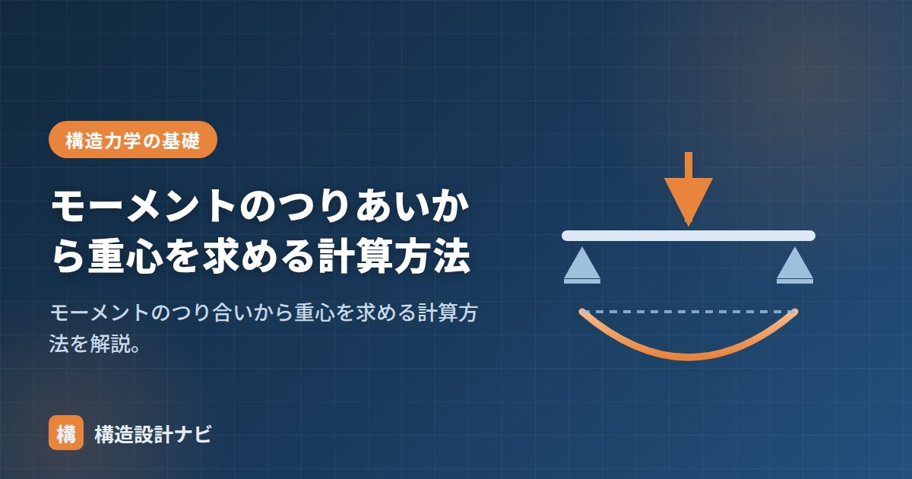

モーメントのつりあいから重心を求める計算方法

重心とは、物体の重さがその1点に集まっているとみなせる点のことです。モーメントのつり合いを使うと、複数の重さが分布している場合でも、重心の位置を四則演算だけで求められます。建築士試験の頻出テーマであると同時に、建物の地震力の検討（重心と剛心のずれ＝偏心）にも直結する、構造力学の基本計算です。
- 基準点まわりの「各部分の重さ×距離」の合計は「全体の重さ×重心までの距離」に等しい。
- 重心位置は x_g ＝ Σ(Wᵢ×xᵢ) ÷ ΣWᵢ で求められる。
- 断面の図心も、重さを面積に置き換えれば同じ式で計算できる。
考え方：なぜモーメントで重心が求まるのか
重心とは「そこを支えれば物体が回転せずにつり合う点」です。回転しないということは、重心まわりのモーメントの合計がゼロだということ。これを言い換えると、ある基準点まわりで、各部分の「重さ×距離」の和は、全体の重さ×重心までの距離に等しくなります。バラバラに分布した重さを、重心に置いた1つの合力で代表させても、どの点まわりのモーメントも変わらない、という関係です。
基準点はどこに取っても結果は同じですが、左端など距離がゼロになる点を選ぶと計算が楽になります。天秤で例えると、支点の左右で「重さ×腕の長さ」が等しいときに水平を保つのと同じ原理です。
例題：3つの重さの重心
左端を基準に、位置0mに20N、位置3mに10N、位置6mに30Nの重さがあるとき、重心は？
分子 ＝ 20×0 ＋ 10×3 ＋ 30×6 ＝ 0 ＋ 30 ＋ 180 ＝ 210
分母 ＝ 20 ＋ 10 ＋ 30 ＝ 60
x_g ＝ 210 ÷ 60 ＝ 3.5m（左端から3.5m）
答えの確かめ方も覚えておきましょう。右端の重さ（30N）が最も大きいので、重心は中央（3m）より右に寄るはずです。計算結果の3.5mはこの感覚と一致しており、妥当だと判断できます。同じ計算をy方向でも行えば、平面的な重心（x_g, y_g）が求まります。
断面の図心も同じ計算
部材断面の図心（断面の重心）も、重さWᵢを面積Aᵢに置き換えれば同じ式で求められます。たとえばL形やT形の断面は、長方形2つに分割し、それぞれの面積×図心位置の和を全体面積で割れば図心が出ます。図心は断面二次モーメントを計算するときの基準軸になるため、断面性能の計算はまず図心を求めるところから始まります。
穴あき断面（欠損部がある断面）では、欠損部の面積をマイナスの面積として同じ式に入れると簡単に計算できます。符号の扱いを間違えやすいので注意してください。
実務での使いどころ
構造設計の実務では、各階の柱や壁が支える重さから建物の重心を求め、剛心（水平力に抵抗する強さの中心）とのずれ＝偏心を確認します。偏心が大きい建物は地震時にねじれ振動が生じやすく、偏心率として規定値以内に収める検討が必要です。また、クレーンで部材を吊る際の吊り位置の決定や、擁壁の転倒の検討など、「重さ×距離」で重心を押さえる場面は現場にも数多くあります。
よくある質問
Q1. 基準点の取り方で答えは変わりませんか？
変わりません。どこを基準にしても同じ重心位置が得られます。ただし基準点からの「距離」の測り方（符号）を全部の重さで統一することが条件です。
Q2. 重心と図心は同じものですか？
均質な材料（密度が一様）なら、断面の図心と重心は一致します。材料が場所によって異なる場合（合成断面など）は、重さの分布で重心を計算する必要があります。
「モーメントのつり合い」「断面二次モーメント」「反力の求め方」をどうぞ。
重心の計算問題は試験だと数値がきれいに割り切れますが、実務の建物では階ごとの重さの分布が複雑で、簡単には求まりません。偏心率の検討では、この地道な集計作業の精度がそのまま結果の信頼性を左右します。
L形断面の図心を求める（図解）
この計算が実務のどこで効くか
| 場面 | 何を求めるか | その先に使うもの |
|---|---|---|
| T形・L形断面の設計 | 断面の図心位置 | 断面二次モーメント（平行軸の定理の基準） |
| 建物の重心 | 各階の質量中心 | 地震力の作用位置、偏心率 |
| 剛心の算定 | 耐力壁の剛性の中心 | 重心とのずれ＝偏心距離 |
| 基礎の設計 | 建物荷重の合力位置 | 接地圧の分布、偏心基礎の検討 |
| 不整形な床の設計 | 床の重心 | スラブの支持条件と応力 |
中空の断面（箱型・中に穴のあるもの）では、穴の面積をマイナスの面積として扱うと一気に楽になります。たとえば200×300の長方形の中央に100×100の穴がある断面なら、A₁＝＋60,000mm²（外形）、A₂＝−10,000mm²（穴）として同じ式に代入するだけです。対称な形なら図心は中央のままですが、穴が偏っている場合はこの方法でずれを正確に求められます。
この「足りない部分をマイナスで足す」という発想は、箱型断面の断面二次モーメントでも同じように使われます。
まとめ
- 重心は重さが集まっているとみなせる点。重心まわりのモーメントの和はゼロ。
- x_g ＝ Σ(Wᵢ×xᵢ) ÷ ΣWᵢ（モーメントのつり合いから導く）。
- x・y両方向で計算すれば平面の重心が求まる。図心も同じ考え方。
- 実務では建物の重心・偏心率の検討や吊り位置の決定に使う。